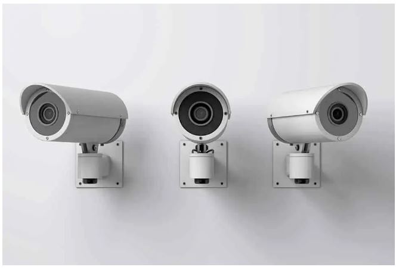

Module 8: CCTV and IP Camera Applications II
Introduction to the CCTV
What Is CCTV?
CCTV cameras are used for security monitoring and surveillance in any type of facility. CCTV stands for Closed-Circuit Television, because CCTV systems transmit video footage over a single channel, essentially creating a closed circuit. This means CCTV footage is displayed on a limited number of personal monitors and screens, not publicly broadcasted. How Does CCTV Work? CCTV systems use cameras to capture video footage of a facility. This footage is sent to a recording device (a DVR or NVR), where it is stored for future reference. It is then sent from the cameras to a dedicated monitor, or even a smartphone or computer, which displays the footage in real time. CCTV security systems are connected with a coaxial cable, network cable, or wireless signal, depending on the system type.


Security cameras capture time-stamped evidence of everything that happens in and around a facility, including accidents, mistakes, and injuries. This is helpful in reducing liability for businesses and settling any disputes that might arise.
With CCTV cameras, property managers gain insight and control over their facility and business operations.
Bullet cameras offer a sleek design and a flexible range of areas they can be placed, including on walls. The shape of a bullet camera allows it to accommodate a large lens, giving it a longer range than many other cameras.
This makes it ideal for monitoring over long distances. Bullet cameras’ good recording quality, motorized zoom capabilities, and infrared make them ideal for outdoor use and use in industries such as manufacturing,
property management and farming.
they can run on a company’s existing network, or can be set up on their own if data and bandwidth speeds are a concern. Unlike analog systems, IP CCTV cameras generally use ethernet cables, such as a Cat5E.
up to 4k in many cases — and thus provide better image quality. They are also usually compatible with many more features than analog based systems, such as video verification, video analytics, and advanced processing for performance in low-light recording situations. IP systems tend to feature easier CCTV camera installation and less cabling than analog systems. IP cameras can also be scaled almost infinitely, allowing for far more flexibility and more powerful systems than analog cameras have traditionally allowed.

This makes it ideal for monitoring over long distances. Bullet cameras’ good recording quality, motorized zoom capabilities, and infrared make them ideal for outdoor use and use in industries such as manufacturing,
property management and farming.
2.Closed Circuit
A closed circuit is one that forms a loop without any interruptions.Currents finds a complete path to follow within a complete loop.IP vs. Analog CCTV Cameras
Two main categories of security cameras are IP cameras and analog CCTV cameras.Analog CCTV Systems
Analog systems are the more traditional form of CCTV. These use coaxial cables to connect the camera and surveillance monitor or recording system. These systems tend to have a more difficult installation process, since they require more cabling than IP systems.IP Systems
IP systems, otherwise known as network cameras, are technically not “CCTV” in the same way as hardwired analog systems — but for convenience they are often referred to as CCTV systems. IP-based systems run on digital IP and local area networks —they can run on a company’s existing network, or can be set up on their own if data and bandwidth speeds are a concern. Unlike analog systems, IP CCTV cameras generally use ethernet cables, such as a Cat5E.
>
Is an Analog or IP System Better?
Analog CCTV cameras offer high reliability thanks to their coax cables, but they generally shoot in much lower resolutions than their digital counterparts (though HD-over-Coax is a possibility). IP security cameras are capable of much higher resolution—up to 4k in many cases — and thus provide better image quality. They are also usually compatible with many more features than analog based systems, such as video verification, video analytics, and advanced processing for performance in low-light recording situations. IP systems tend to feature easier CCTV camera installation and less cabling than analog systems. IP cameras can also be scaled almost infinitely, allowing for far more flexibility and more powerful systems than analog cameras have traditionally allowed.
Bullet CCTV
Dome cameras are generally used indoors and mounted on ceilings. This allows them to survey large areas at a wide angle. Dome CCTV cameras are great for retail establishments,
restaurants, hotels, and casinos, as they can completely monitor a large room. They are also well-suited to environments that get dirty easily, such as kitchens and warehouses. Dome cameras offer smaller, more discreet hardware than other camera types.
DVR recorder converts all video footage to digital format, compresses the file, and stores it on a CCTV hard drive. The DVR can be hooked up to a monitor to show video footage, or it can connect to a router and internet modem to broadcast the footage using an internal network.
More modern CCTV camera systems allow users to store security footage in the cloud, allowing property owners and managers to access live and recorded footage from a mobile device or web browser. This is a good alternative to memory cards, because it offers better storage of large video files,
as well as more convenience in today’s internet-based world. CCTV cloud storage allows users to get instant security alerts, making it easy to view and respond to security footage in real time, even when users are offsite.
Security camera electric signal.An analog camera captures images using a lens, image sensor and the internal circuitry system generates the analog electrical signals that are sent through coaxial cables to an external recorder (known as DVR) that converts analog signals to digital format for local recording and remote access.
Connecting Multiple Cameras to a DVR It is possible to connect several analog cameras to a digital recorder (DVR), just get the equipment with an adequate number of channels.
The following image shows 4 analog cameras connected to a DVR that in turn is connected to an analog monitor that displays the images. The system uses coaxial cables designed for CCTV.
CCTV system basic diagram Take a look at the diagram below, the first block shows the analog cameras that are responsible for generating the video, the second block has the DVR that converts the signals from analog to digital
to record and send the video stream to be displayed in the third block where the analog monitor is located.

DVR and coaxial cable. If a cable without parallel power cord is used (such as the black cable shown in the picture), it will be necessary to use a separate power cable.
Note in the picture below that there are lines on the monitor screen that make up the image, depending on the number of lines the camera can generate it is considered a higher resolution camera, although it is an old technology,
we still find cameras with resolutions of 480, 540, 600 and 1000 TV lines however such cameras are not recommended.

restaurants, hotels, and casinos, as they can completely monitor a large room. They are also well-suited to environments that get dirty easily, such as kitchens and warehouses. Dome cameras offer smaller, more discreet hardware than other camera types.
Video Storage
CCTV video storage can happen in a few different ways. Footage may be stored in a DVR or an NVR, or it can be stored in the cloud.NVR vs DVR
In a CCTV security camera system, an onsite recording device is used to store footage captured by security cameras. In analog CCTV systems, this is a DVR (Digital Video Recorder) — IP systems use an NVR (Network Video Recorder). In analog systems,DVR recorder converts all video footage to digital format, compresses the file, and stores it on a CCTV hard drive. The DVR can be hooked up to a monitor to show video footage, or it can connect to a router and internet modem to broadcast the footage using an internal network.
Cloud Storage
NVR CCTV systems connect to IP cameras, and use a software program to automatically record video in a digital format. This allows NVRs to instantly transmit data over a computer network. This makes it easy to use NVRs for remote viewing of security footage in real time on a smartphone or web browser.More modern CCTV camera systems allow users to store security footage in the cloud, allowing property owners and managers to access live and recorded footage from a mobile device or web browser. This is a good alternative to memory cards, because it offers better storage of large video files,
as well as more convenience in today’s internet-based world. CCTV cloud storage allows users to get instant security alerts, making it easy to view and respond to security footage in real time, even when users are offsite.
What is an analog camera?
At first, a CCTV camera has characteristics similar to any traditional camera you know (like the camera on your cell phone) because it has a lens that directs light to an internal image sensor, but the similarities end there because in an analog camera there is no internal SD card for recording.Security camera electric signal.An analog camera captures images using a lens, image sensor and the internal circuitry system generates the analog electrical signals that are sent through coaxial cables to an external recorder (known as DVR) that converts analog signals to digital format for local recording and remote access.
Connecting Multiple Cameras to a DVR It is possible to connect several analog cameras to a digital recorder (DVR), just get the equipment with an adequate number of channels.
The following image shows 4 analog cameras connected to a DVR that in turn is connected to an analog monitor that displays the images. The system uses coaxial cables designed for CCTV.
CCTV system basic diagram Take a look at the diagram below, the first block shows the analog cameras that are responsible for generating the video, the second block has the DVR that converts the signals from analog to digital
to record and send the video stream to be displayed in the third block where the analog monitor is located.
Cable and connectors for CCTV cameras
Note in the following image that a siamese cable has a BNC connector at both ends and a pair of wires that to power the camera, at one end there's a power connector (also known as P4 connector in some countries) and on the other side the red and black wires are connected to a power source.DVR and coaxial cable. If a cable without parallel power cord is used (such as the black cable shown in the picture), it will be necessary to use a separate power cable.
Camera resolution
There are different analog camera technologies on the market and therefore different types of resolutions, let's discuss this topic.Analog resolution
The resolution of an old traditional analog camera (CVBS) is measured in TV lines, which is nothing more than the number of vertical lines that appears on a monitor. The higher the number of lines, the higher the resolution.Note in the picture below that there are lines on the monitor screen that make up the image, depending on the number of lines the camera can generate it is considered a higher resolution camera, although it is an old technology,
we still find cameras with resolutions of 480, 540, 600 and 1000 TV lines however such cameras are not recommended.
CCTV TV Lines
Digital resolution
As you saw before, after going through a DVR the image is converted to the digital format.
When converted to this format another measurement unit is used to refer to the resolution of the camera. The term TV lines is
not used for digital resolution because the number of pixels that is available in the image is used.
Nomes such as CIF, 2CIF, 4CIF, VGA, SVGA, XVGA, HD, Full HD, Mega Pixel and 4K are used to refer to CCTV digital resolution. See in the picture below that there are several dots that form an image, they are the pixels and the higher the number of pixels, the higher the digital resolution. Digital resolution It is possible to have thousands of pixels in an image, in this example, we could have cameras that generate 0.3 to 8 million pixels, that's the reason the resolution is referred in Mega Pixels (MP).
Here a video that explain in the details how the CCTV system works.
the DVR also has a digital output that allows sending the camera images over a computer network and the Internet.
See the following image that illustrates the concept.
not used for digital resolution because the number of pixels that is available in the image is used.
Nomes such as CIF, 2CIF, 4CIF, VGA, SVGA, XVGA, HD, Full HD, Mega Pixel and 4K are used to refer to CCTV digital resolution. See in the picture below that there are several dots that form an image, they are the pixels and the higher the number of pixels, the higher the digital resolution. Digital resolution It is possible to have thousands of pixels in an image, in this example, we could have cameras that generate 0.3 to 8 million pixels, that's the reason the resolution is referred in Mega Pixels (MP).
Here a video that explain in the details how the CCTV system works.
DVR network output
As you saw earlier, a DVR converts the analog camera signals into a digital format so it can be recorded on an internal hard drive, but not only that,the DVR also has a digital output that allows sending the camera images over a computer network and the Internet.
See the following image that illustrates the concept.
Note in this picture that the analog cameras are connected to the DVR that receives the signals in traditional analog format with 600 TV lines (TVL) that are converted to the digital format 4CIF
that represents 704 x 480 pixels horizontally and vertically respectively. This video in digital format is displayed on a computer screen with specific software, note in the diagram that there is a blue cable (network cable) connecting the digital output of the DVR to a computer.
It is also possible to connect a coaxial cable from the DVR to an analog monitor and also obtain a traditional analog video output with the 600 TV lines.
Note in the following image that there is a BNC connector output to use a coaxial cable and connect to a traditional analog monitor and an HDMI type output to connect to a digital monitor.
and is not the most appropriate to be used these days. Modern technologies such as HD-TVI, HD-CVI, and AHD are suitable for CCTV projects where it is still necessary to use analog cameras. When connecting a camera using this type of technology in a modern DVR, the digital output will be much higher than the 4CIF resolution (704 x 480 pixels) previously seen.
It is common to find these modern cameras in the market with Full HD resolution (1920 x 1080 pixels) and even higher resolutions such as 3 Mega Pixel, 5 Mega Pixel, and 8 Mega Pixel.
Analog CCTV systems are no longer used in large projects, as there is a preference for IP systems, but there is still a market for analog cameras and DVRs in small projects where cost is a key factor.
If you need to use an analog system, avoid the old traditional technology (CVBS) and use modern technologies with high-resolution analog CCTV cameras such as HD-TVI, HD-CVI, and AHD.
that represents 704 x 480 pixels horizontally and vertically respectively. This video in digital format is displayed on a computer screen with specific software, note in the diagram that there is a blue cable (network cable) connecting the digital output of the DVR to a computer.
It is also possible to connect a coaxial cable from the DVR to an analog monitor and also obtain a traditional analog video output with the 600 TV lines.
Connecting monitors to the recorder (DVR)
After receiving signals from the analog cameras, the DVR can display them on a monitor or TV, just use the available BNC, VGA or HDMI outputs on the back.Note in the following image that there is a BNC connector output to use a coaxial cable and connect to a traditional analog monitor and an HDMI type output to connect to a digital monitor.
DVR BNC and HDMI
Analog cameras with modern technologies So far I have talked about traditional analog cameras that have the analog resolution measured in TV lines, the type of technology used in these cameras is called CVBSand is not the most appropriate to be used these days. Modern technologies such as HD-TVI, HD-CVI, and AHD are suitable for CCTV projects where it is still necessary to use analog cameras. When connecting a camera using this type of technology in a modern DVR, the digital output will be much higher than the 4CIF resolution (704 x 480 pixels) previously seen.
It is common to find these modern cameras in the market with Full HD resolution (1920 x 1080 pixels) and even higher resolutions such as 3 Mega Pixel, 5 Mega Pixel, and 8 Mega Pixel.
Analog CCTV systems are no longer used in large projects, as there is a preference for IP systems, but there is still a market for analog cameras and DVRs in small projects where cost is a key factor.
If you need to use an analog system, avoid the old traditional technology (CVBS) and use modern technologies with high-resolution analog CCTV cameras such as HD-TVI, HD-CVI, and AHD.
CCTV Connection Project
To connect a CCTV camera to a WiFi router, you will need a WiFi-enabled CCTV camera and a WiFi router with an available Ethernet port. First, ensure that your CCTV camera supports WiFi connectivity. Then, follow these general steps- 1. Power on the CCTV camera and connect it to the WiFi router using an Ethernet cable.
- 2. Access the camera's settings interface by typing its IP address into a web browser on a connected device.
- 3. Navigate to the camera's network settings and select the WiFi network you want to connect to.
- 4. Enter the WiFi network's password and save the settings.
- 5. Disconnect the Ethernet cable from the camera and restart it.
- 6. The camera should now be connected to the WiFi network. You can verify this by checking the camera's network status or accessing it wirelessly.